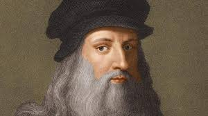

Leonardo de Vinci
El sabio renacentista, el artista versado en todos los ámbitos del conocimiento humano.No sólo era artista, también fue una eminencia en aerodinámica, cocina, hidráulica, anatomía, poesía, botánica y por supuesto, por lo que lo conocemos hoy: por su pintura, escultura y arquitectura. Gracias a ello forma parte, junto a Miguel Ángel y Rafael, de la santísima trinidad del arte renacentista.
Pasó sus últimos años en Roma y finalmente en el palacio de Cloux, como «primer pintor, arquitecto y mecánico del rey». Su brazo derecho quedó paralizado, pero tenía una mano izquierda igual de hábil. De hecho se sabe que pese a su dislexia, podía escribir con una mano hacia adelante, y con la otra hacia atrás, sus obras mas populares son:
La anunciación.

Retrato de Ginevra de' Benci.
La Virgen de las rocas.

Dama con armiño.

La Belle Ferronière

Menu
